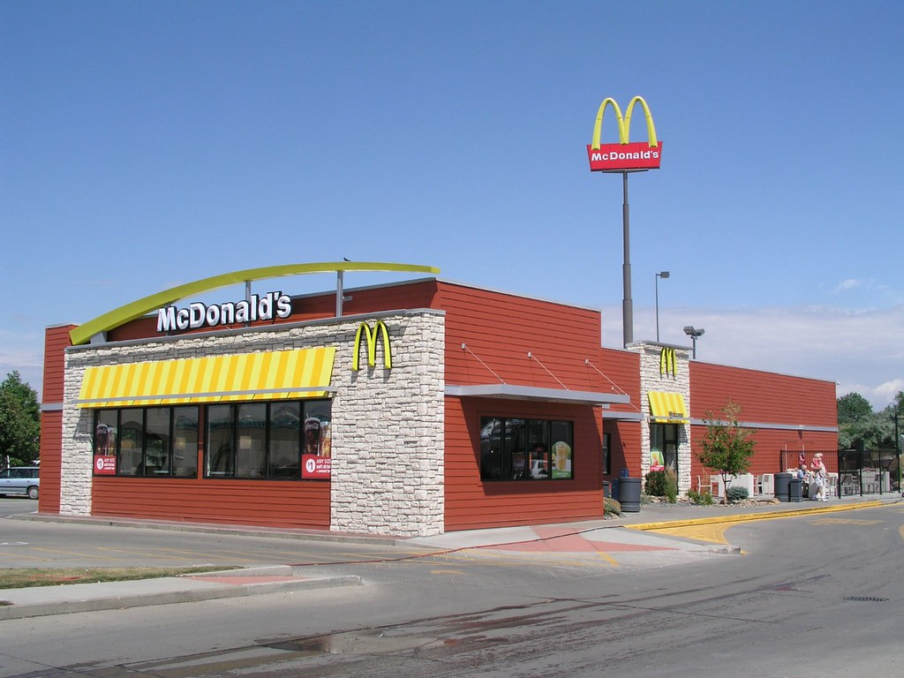

McDonald's operating income rose 7% to $3.6 billion in the third quarter on 1% more revenue

McDonald's revenue rose 1.1% to $7.2 billion in the third quarter, but operating income rose 7.1% to $3.6 billion, so operating margin widened to 50.2%. Diluted earnings per share rose 10.4% to $3.51. McDonald's shares rose 6.5% from the close on November 3 to the close on November 4, the day of the earnings release, while the S&P 500 fund SPY rose 1.7% over the same two closes.
Revenue edged up while operating income grew faster
Revenue of $7.2 billion compares with $7.1 billion in the third quarter of 2025. In its earnings release, McDonald's said global comparable sales increased 1.5% and systemwide sales, which include restaurants run by franchisees, increased 4%. The release put comparable sales in the U.S. down 0.2%.
Operating income rose from $3.4 billion to $3.6 billion. Operating margin was 50.2%, up 2.8 points from 47.4% a year earlier. The 10-Q says results primarily reflected higher sales-driven franchised margins and higher other operating income across all segments.
Earnings per share rose faster than net income
Net income rose 9.1% to $2.5 billion. The effective tax rate was 22.0%, against 22.8% a year earlier. Diluted earnings per share rose 10.4% to $3.51, a little faster than net income because the diluted share count fell 1.1% to 708 million. The company repurchased $519 million of shares in the quarter and paid $1.3 billion in dividends. It declared a 4% increase in its quarterly dividend, to $1.93 per share.
Free cash flow fell as operating cash flow dropped
Cash from operations was $3.0 billion, down 11.6% from $3.4 billion. Capital spending was $884 million, down 12.6%. Free cash flow, which is cash from operations minus capital spending, was $2.1 billion, down 11.2% from $2.4 billion. That is 30.0% of revenue, against 34.1% in the third quarter of 2025. The dividends and buybacks above came to 85% of the quarter's free cash flow.
Twelve quarters of figures
Sources: Form 10-Q (SEC EDGAR) · Form 10-Q filing index · EDGAR company facts for McDonald's · McDonald's third-quarter 2026 earnings release (Exhibit 99.1). More figures for McDonald's are on its company page.